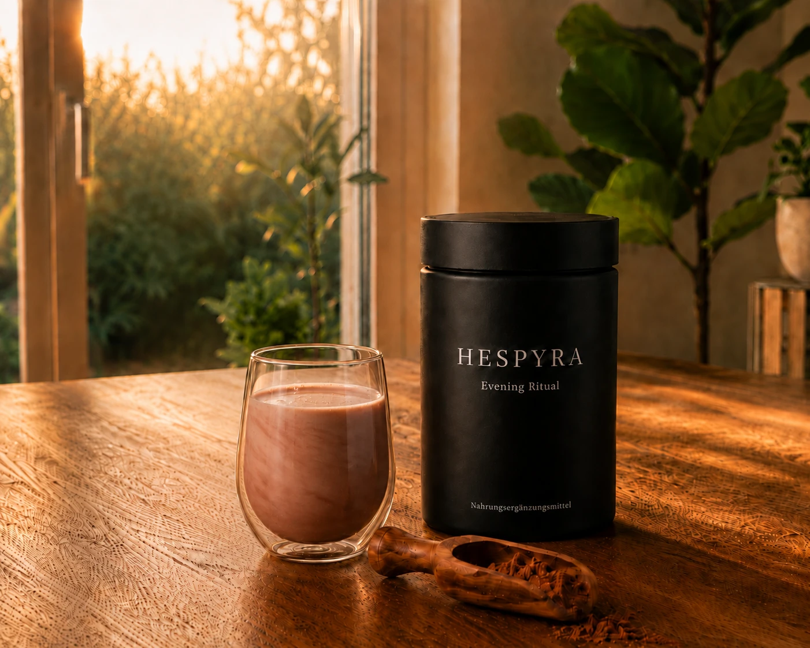

Für alle, die abends mehr wollen als Kapseln.
Nahrungsergänzung, die du gerne trinkst.
Mit Kakao, echter Vanille, Magnesium und ausgewählten Pflanzenextrakten – als Pulver zum Anrühren. Warm oder kalt.
- 20 Sek. bereit
- Warm oder kalt
- Ohne Zuckerzusatz
- 30 Tage Vorrat

So einfach funktioniert HESPYRA
Ein Löffel. Mit Wasser anrühren. Fertig.
Dosieren
Einen Löffel HESPYRA-Pulver ins Glas geben — eine exakt vorportionierte Menge.
Anrühren
Mit heißem Wasser oder Pflanzenmilch aufgießen und rund 20 Sekunden glatt und cremig verrühren.
Genießen
Warm oder kalt genießen — eine volle Portion der Formel, in einer Form, die schmeckt.

Geschmack
Tiefer Kakao. Echte Vanille.
Vollmundig, fein und angenehm mild — ohne Zuckerzusatz. Ein Geschmack, auf den du dich freust.
Die Formel
Eine hochwertige Formel — jede Zutat einzeln benannt.
Magnesium, ausgewählte Pflanzenextrakte und Premium-Rohstoffe — keine versteckten „Blends", keine Füllstoffe. Du siehst genau, was drin ist. Offen. Transparent. Nachvollziehbar.
Tippe auf eine Zutat für Herkunft & Details.
Edler Extrakt Safran Affron® · aus Spanien
Ein Gewürz, das aus den von Hand geernteten Blüten des Safran-Krokus gewonnen wird. Wir verwenden den Extrakt Affron®, standardisiert auf seine charakteristischen Safran-Verbindungen wie Safranal und Crocine.
Wurzel-Extrakt Ashwagandha KSM-66® · Wurzelextrakt
Auch Schlafbeere oder Indischer Ginseng genannt (Withania somnifera), seit Langem in der ayurvedischen Tradition verwendet. Wir nutzen KSM-66®, einen Wurzelextrakt, schonend und ohne chemische Lösungsmittel aus indischen Wurzeln gewonnen.
Vitalpilz Reishi Ganoderma lucidum
Ein Vitalpilz mit langer Anwendungstradition in Ostasien. Wir verwenden einen Extrakt aus dem Fruchtkörper in geprüfter Qualität.
Premium-Rohstoff L-Theanin Suntheanine®
Eine Aminosäure, die natürlicherweise in den Blättern des grünen Tees vorkommt. Wir verwenden die reine Form Suntheanine®, hergestellt in einem patentierten Verfahren.
Ausgewählter Nährstoff Phosphatidylserin SerinAid®
Ein Phospholipid und natürlicher Baustein jeder Zellmembran. Unser SerinAid® wird aus pflanzlichem Sonnenblumen-Lecithin gewonnen.
Mineralstoff-Basis Magnesium Bisglycinat & Taurat
In zwei besonders gut verträglichen, organischen Formen. Magnesium trägt zu einer normalen Funktion des Nervensystems und zur normalen psychischen Funktion bei.
Geschmack Kakao Vollmundige Basis
Hochwertiger Kakao gibt HESPYRA seinen tiefen, vollmundigen Charakter — die Basis des Geschmacks.
Geschmack Vanille Bourbon-Qualität
Echte Bourbon-Vanille rundet die Komposition mit einer feinen, warmen Note ab.
Magnesium trägt zu einer normalen Funktion des Nervensystems und zur normalen psychischen Funktion bei.
Die übrigen Zutaten wählen wir mit Sorgfalt aus und nennen sie dir offen und vollständig.
Wissenschaftliche Tiefe
Entwickelt aus 16 Jahren Formulierungserfahrung.
HESPYRA entsteht nicht in einem Marketingbüro. Die Formel wurde gemeinsam mit Christian Baker entwickelt — Gründer von Profound Formulas und Formulierer, der seit über 16 Jahren Nahrungsergänzung für führende Marken weltweit entwickelt.
Diese Erfahrung bestimmt jedes Detail: welche Rohstoffe verwendet werden, in welcher Form und in welcher Dosierung — damit die Zusammensetzung nicht nur auf dem Etikett überzeugt, sondern in ihrer Qualität.
Für dich heißt das: eine hochwertige Formel, auf die du dich verlassen kannst — auf Basis von Fachwissen, nicht von Marketing.

Christian Baker
Formulierer & Gründer von Profound Formulas
Im Vergleich
Was HESPYRA anders macht.
In wenigen Sekunden zubereitet
Einfach Wasser oder Pflanzenmilch hinzufügen.
Kakao & echte Vanille
Tiefer Geschmack, auf den du dich freust.
Ohne Zuckerzusatz
Keine unnötigen Zusätze. Nur das, was sinnvoll ist.
Offen deklarierte Formel
Jede Zutat einzeln benannt.
Für den Abend entwickelt
Mit Magnesium und ausgewählten Pflanzenextrakten.
Reicht für einen Monat
Eine Dose. Ein Monat. Einfach in den Alltag integrierbar.
Kapsel oder Tablette
Mit Wasser einnehmen. Keine Zubereitung.
Meist geschmacksneutral
Wird rein zur Einnahme genommen.
Je nach Produkt unterschiedlich
Zusammensetzung von Produkt zu Produkt verschieden.
Oft zusammengefasst
Zutaten häufig als Gruppen angegeben.
Für jeden Zeitpunkt gedacht
Zu jeder Tageszeit einzunehmen.
Unterschiedliche Packungsgrößen
Vorrat je nach Produkt unterschiedlich.
Vergleich mit typischer Nahrungsergänzung in Kapsel- oder Tablettenform.
Warum HESPYRA entstanden ist
Nahrungsergänzung, die ihren Zweck erfüllt — und die man gerne trinkt.
Viele Nahrungsergänzungen erfüllen ihren Zweck. Aber nur wenige sind etwas, auf das man sich wirklich freut.
Nach langen Arbeitstagen war ich zwar zuhause, aber innerlich oft noch nicht ganz im Feierabend. Ich fand viele Kapseln. Viele funktionale Pulver. Aber kaum etwas, das ich wirklich jeden Abend gerne trinken wollte.
Also begann ich gemeinsam mit Christian Baker von Profound Formulas, genau das zu entwickeln.
Ich hoffe, dass HESPYRA auch dir dabei hilft, den Abend ein kleines Stück angenehmer zu beginnen.

Dominik Schwab
Gründer von HESPYRA
Häufige Fragen
Was du vor der Eintragung wissen willst.
Was ist HESPYRA genau?
Eine Nahrungsergänzung in Pulverform zum Anrühren – mit Kakao, echter Vanille, Magnesium und ausgewählten Pflanzenextrakten. Entwickelt als trinkbares Abendprodukt.
Enthält HESPYRA Zucker?
Keinen zugesetzten Zucker. Der Geschmack kommt ausschließlich aus hochwertigem Kakao und echter Vanille.
✓ Ohne Zuckerzusatz
Wann und wie trinke ich es?
Am Abend, wann es dir passt. Einen Löffel in heißes Wasser oder Pflanzenmilch geben, kurz verrühren – fertig.
Warum Pulver statt Kapseln?
Die gleiche Formel – nur in einer Form, auf die man sich eher freut als auf eine Kapsel. Genau daraus entstand HESPYRA.
✓ Vegan
Warum schmeckt HESPYRA nach Kakao?
Weil Geschmack Teil der Idee ist. Hochwertiger Kakao und echte Vanille machen die Formel zu etwas, das man wirklich gerne trinkt.
Warum enthält HESPYRA Magnesium?
Magnesium ist ein zentraler Bestandteil der Formel und in durchdachter Form und Dosierung enthalten. Die Details findest du offen deklariert im Abschnitt zur Formel.
✓ Transparente Zutaten
Ist HESPYRA ein Schlafprodukt?
Nein. HESPYRA ist kein Schlafmittel. Es ist eine Nahrungsergänzung für den Abend.
✓ Kein Melatonin
Was bringt mir die Warteliste?
Du erfährst als Erste:r, wenn die erste Edition fertig ist, bekommst sie zum Preis der Early-Bird-Edition und begleitest die Entstehung. Kostenlos und unverbindlich.
✓ Made in Germany
Erste Edition
Sei dabei, wenn HESPYRA fertig ist.
Wir bauen die erste Edition gerade. Trag dich ein und bekomme als Erstes Bescheid, wenn sie da ist — zum Preis der ersten Edition. Eine Nachricht, kein Newsletter-Lärm.